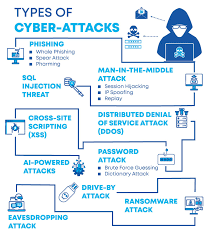
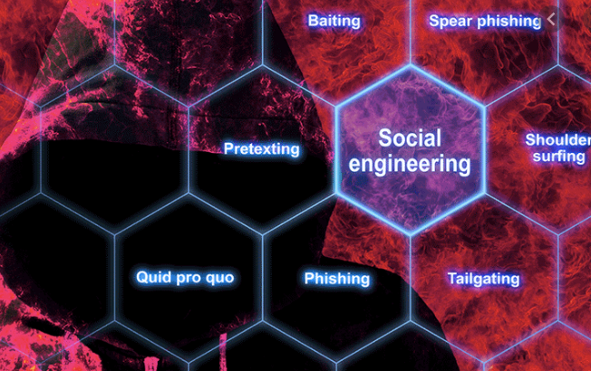

The internet has made the world smaller in many ways but it has also opened us up to influences that have never before been so varied and so challenging.
As fast as security grew, the hacking world grew faster.In today ought automated world the special attention to be addressed to the cyber security of
your data and activity online.The days when network security was connected solely to big companies and institutions are gone.
Nowadays, each person can be a possible victim of cyber-attack regardless of the status and monetary resources on the bank account.
It's important to bear in mind the intense cyber security issues presently affecting technology.
Therefore, this article will reveal some types of cyber security threats.
A cyber-attack is an assault launched by cybercriminals using one or more computers against single or multiple computers or networks. A cyber-attack may maliciously disable computers, steal data, or use a breached computer as a launch point for different attacks. Cybercriminals use a range of strategies, together with malware, phishing, ransom ware, denial of service, among other methods.
Types of cyber security threats
Malware
Ransom war
social engineering
phishing

Malware
Malware is defined as any code added, changed or removed from a software system in order to intentionally cause harm or subvert the intended function of the system.
Some types of malware
Virus:-
A virus is self-replicating malicious program.It exists as an executable and spreads by copying itself to other host systems. It is passive and needs to be transferred through files or media files or network files.Depending how the complex the code is, it can modify the replicated copies of its self. Viruses can be used to harm host computers and networks, steal information, create botnets, render advertisements, and steal money among other malicious activities.
Worm:-
This is a self-replicating and active malicious program that can spread over the network by exploiting various system vulnerabilities. It uses targeted vulnerabilities in the operating system or installed software. It contains harmful routines but can be used to open communication channels which serve as active carriers. The Worm consumes a lot of bandwidth and processing resource through continuous scanning and makes the host unstable which can sometimes cause the system to crash. It may also contain a payload that are pieces of code written to affect the computer by stealing data, deleting files or create a bot that can lead the infected system being part of a botnet.While viruses require human activity to spread, worms have the ability spread and replicate independently.
Trojan horse:-
Commonly referred to as Trojan, this is a program that presents as legitimate software which when downloaded and executed embeds malicious routines or files on the host. In most cases, the Trojan horse when executed will install a virus or may have no payload. It cannot self-replicate and relies on the system operators to activate. It can however give remote access to an attacker who then can perform any malicious activity that is of interest to them. Trojan horse programs have different ways they affect the host depending on the payload attached to them and are usually spread through social engineering.
Ransom ware
Ransom war is a type of malware (malicious software) that involves an attacker locking the victim's computer system files typically through encryption and demanding a payment to decrypt and unlock them. It that attempts to encrypt (scramble) the data and then extort a ransom to release an unlock code. Ransom ware is malicious software that infiltrates computer systems in the same way as malware, but with a different goal in mind. Cyber attackers use ransom ware to gain remote access to a device, such as a computer. They then hold the data they find on the device hostage, threatening to destroy it or release it unless a ransom is paid.
Types of Ransom ware
Jigsaw:-
Jigsaw is a particularly serious ransom ware in that it will encrypt your files and then begin deleting them systematically until the ransom is paid. It will delete one or more files every hour over the course of a 72-hour period. Once the 72 hours are up, all of the files that have been encrypted will be deleted.
Locky:-
is a ransom ware that's spread via spam, often as an email message that looks like an invoice. When opened, the user is instructed to enable macros in order to read it. If the user does this, the ransom ware will begin encrypting files, demanding a ransom to unlock them.
Cerber:-
is a relatively new ransom ware. What makes it such a deadly ransom ware is that the descriptor for each variant is compatible with 12 different languages. This made it easy for the creator to create an affiliate system, basically creating a ransom ware-as-a-service platform that resulted in huge profits for the creator separate from their own independent cyber-attacks. Cerber targets cloud-based Office 365 users through an elaborate phishing campaign. It's affected millions of users so far.
Social engineering
Social engineering is an attack that relies on human interaction to trick users into breaking security procedures in order to gain sensitive information that is typically protected.
Threat actors use social engineering techniques to conceal their true identities and motives and present themselves as a trusted individual or information source. The objective is to influence, manipulate or trick users into giving up privileged information or access within an organization.
social engineers is to focus on the behaviors and patterns of employees with low level but initial access, such as a security guard or receptionist; hackers can scan the person's social media profiles for information and study their behavior online and in person.
For example, the attacker might pretend to be a co-worker who has some kind of urgent problem that requires access to additional network resources.

Different types of Social engineering attacks:-
Phishing
is the most common type of social engineering attack. The attacker recreates the website or support portal of a renowned company and sends the link to targets via emails or social media platforms. The other person, completely unknown of the real attacker, ends up compromising personal information and even credit card details.
How to protect from phishing
Be suspicious of unexpected emails.
Make use of anti-malware software.
Make sure you have spam filters turned on.
Pretexting:-
Pretexting is when one party lies to another to gain access to privileged data. For example, a pretexting scam could involve an attacker who pretends to need personal or financial data in order to confirm the identity of the recipient.
Quid pro quo
A quid pro quo attack is one in which the social engineer pretends to provide something in exchange for the target's information or assistance. For instance, a hacker calls a selection of random numbers within an organization and pretends to be calling back from tech support. Eventually, the hacker will find someone with a legitimate tech issue who they will then pretend to help. Through this, the hacker can have the target type in the commands to launch malware or can collect password information.
Data leakage
Data leakage is the unauthorized transmission of data from within an organization to an external destination or recipient. The term can be used to describe data that is transferred electronically or physically. Data leakage threats usually occur via the web and email, but can also occur via mobile data storage devices such as optical media, USB keys, and laptops.
Barely a day goes by without a confidential data breach hitting the headlines. Data leakage, also known as low and slow data theft, is a huge problem for data security, and the damage caused to any organization, regardless of size or industry, can be serious.
How to prevent data leaking from organization
Ensure mobile devices have passcode locks.
Turn on the tracking by GPS and the option to remotely wipe the device if it is lost.
The use of encryption software is highly recommended when using portable storage devices.
Insider threat
An insider threat is a malicious threat to an organization that comes from people within the organization, such as employees, former employees, contractors or business associates, who have inside information concerning the organization's security practices, data and computer systems.
If your organization employs staff (full time or as contractors), there is a possibility they could leak data by mistake or maliciously.
How to stop insider threat
Implement Strong Authentication
Control 3rd Party Access
Enable “Sentiment Analysis”
Detect Account Compromise
Hacking
It is an attempt to exploit a computer system or a private network inside a computer. Simply put, it is the unauthorized access to or control over computer network security systems for some illicit purpose.
How to stop Hacking
Don’t access personal or financial data with public Wi-Fi.